|
|
HELP FIND THE FOLLOWING AFRICAN AND MIDDLE EAST LOCATIONS
PAGE 201
DANGER
MAN: I
Can Only Offer You Sherry (George Pollock: 1965)
Taken on the Omar Almukhtar Road,
Tripoli, Libya: Establishing shots of Baghdad (Ahmed Pasha Karamanli Mosque, Omar Almukhtar Road)
(Identified by Paul Stroud, November 2014)
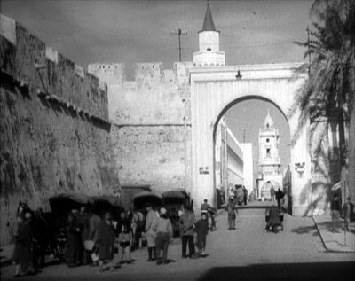
Port Said (a road in Cairo) finishing
on Al-Sayeda Zainab Mosque – Establishing shots of Baghdad.
(Identified by Paul Stroud, November 2014)
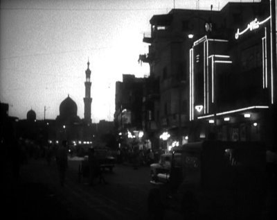
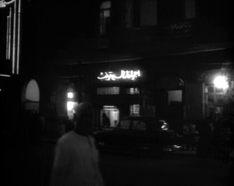
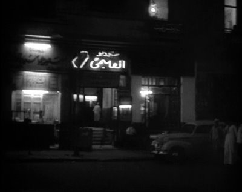
Unknown 1- Establishing shots of Baghdad
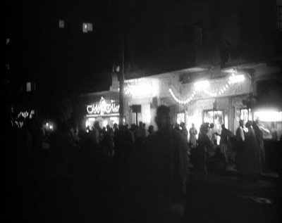
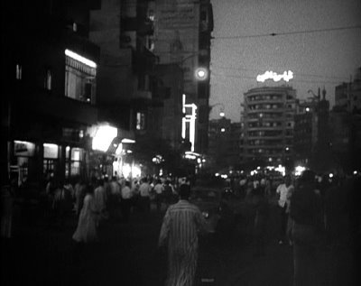
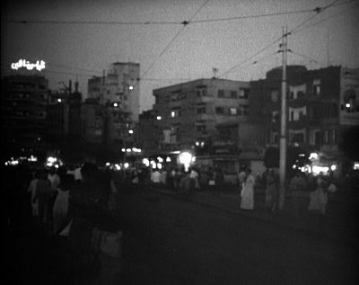
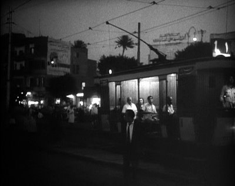
Unknowns 2 - Establishing shots of Baghdad
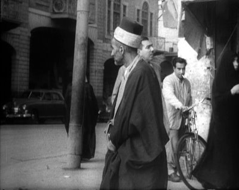
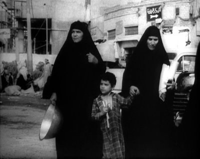
Unknown 3 - Drake’s hotel room in Baghdad
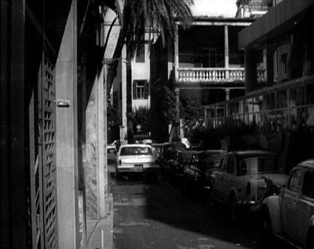
Salem El-Hendawy Palace, Dokki, Giza Egypt -
Drake
goes to police headquarters to confront Colonel Nubar.
(Identified by Sietse Postma, February 2025)
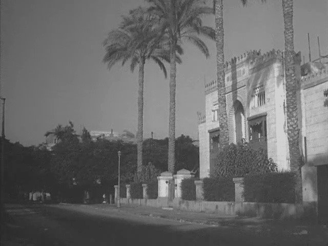
DANGER
MAN: Judgement
Day (Don Chaffey:
1965)
Unknown 1 to 3
–
Footage of Arabic scenes.
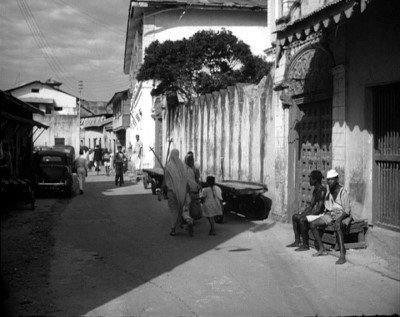


Aden, The Republic of Yemen,
Middle East: –
Footage of Arabic scene
(Identified by Dr S Straw, January 2011)
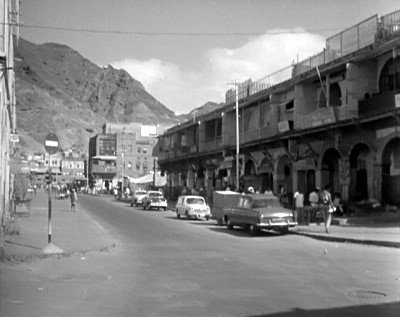
DANGER
MAN: To
Our Best Friend (Patrick McGoohan:
1965)
Unknown 1 to 2 - Stock shots establishing Bagdad and the Vincent’s apartment building.
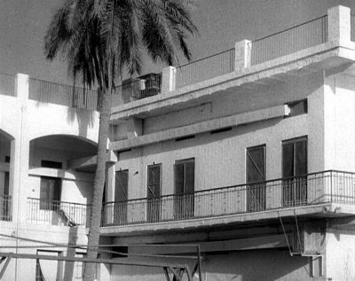

Martyrs' Square, Tripoli, Libia - Stock shots establishing Bagdad and the Vincent’s apartment building (corner of Martyrs' Square and Omar Almukhtar Road) .

DANGER MAN: Loyalty Always Pays (Peter Yates: 1965)
place Braconnier near boulevard du 30 Juin, Kinshasa, Congo-Kinshasa, Democratic Republic of the Congo
-
Various stock shots from Africa.
(Identified by Pierre Alfonsi, April 2023)
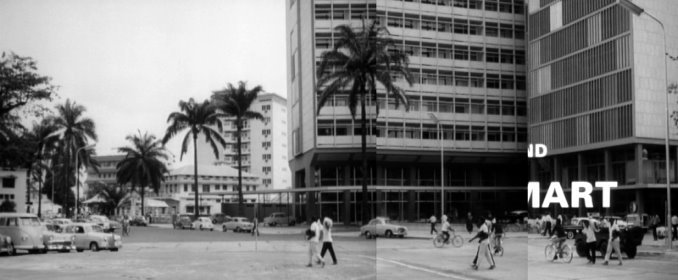
Unknown 1 to 5 – Various stock shots from Africa.
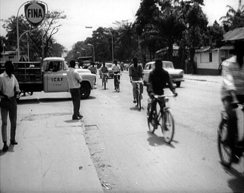

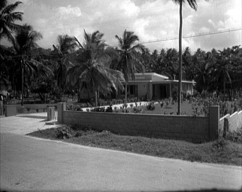
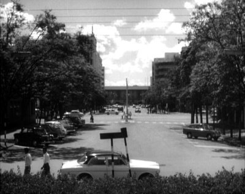

Fischer’s Tower, Lake Nakuru, Kenya - Stock footage of Africa.
(Identified by Pierre Alfonsi, June 2024)

DANGER MAN:
The Galloping Major
(Peter Maxwell: 1964)
Unknown 1
– The capital city of the
African country.

DANGER
MAN: Fish
on a Hook (Robert Day: March 1964)
Seattle-Tacoma International Airport, Washington, U.S.A. – Drake Flies into Egypt.
(Identified by "Liffy 1M," subscriber to PPRuNe.org, alerted by Goldox, February 2022)
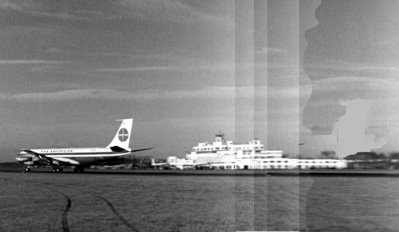
Unknown 1 – Gerdie drives Drake through the town to his flat.
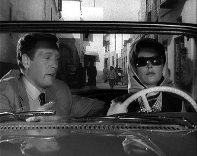

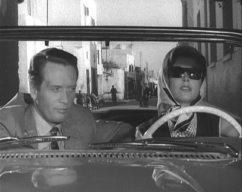
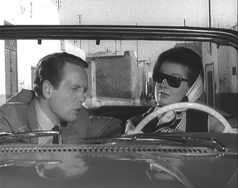

Unknown 2 – Gerdie takes Drake to a local restaurant for dinner.
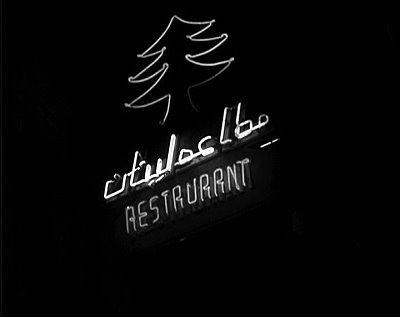
Unknown 3 – Drake and Nadia make their escape to a waiting British cruiser.

DANGER
MAN: The
Mercenaries (Don Chaffey:
1964)
Unknowns 1 to 5
– Various stock shots to represent the African ‘Confederation’ and its
neighbour.
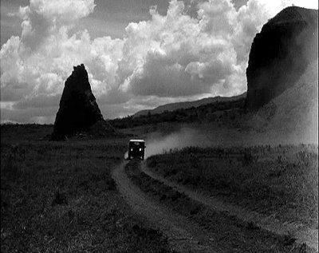

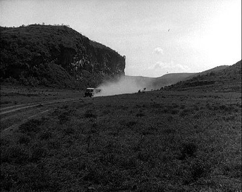
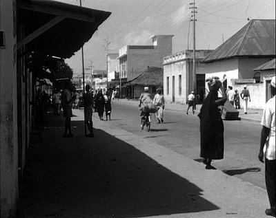
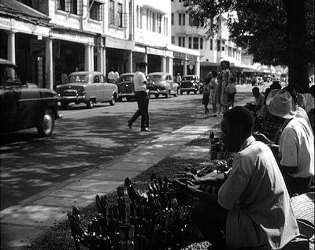
Palace of Wonders, Stone Town, ZanzibarStock shot to represent the African ‘Confederation’ and its neighbour.
(Identified by Geoff Dodd, January 2022)

DANGER
MAN: Sting
in the Tail (Peter Yartes:
1964)
Unknown 1
– Drake flies into Beirut to
catch up with the assassin Noureddine.
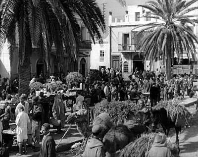
THE CHAMPIONS:
Desert Journey (Paul Dickson: Spring
1968)
Ras El Bar, Egypt: - Establishing shot of Kasfareet, El Hami where Major Tuat is preparing for the peace conference.
(Identified by Sietse Postma, February 2025)

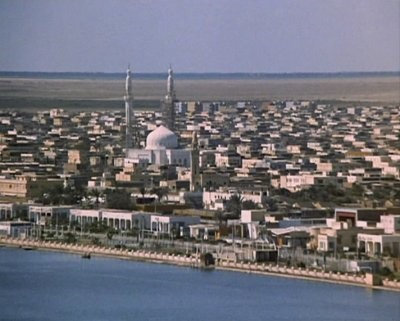
Aden, The Republic of Yemen, Middle East: – Establishing shot of a street in Kasfareet, El Hami where Major Tuat is preparing for the peace conference in his hotel room.(Identified by Dr S Straw, January 2011)

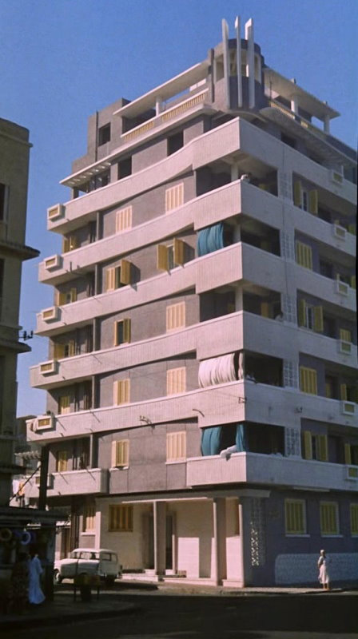
Salem El-Hendawy Palace, Dokki, Giza Egypt - A peace conference is taking place in Kasfareet, El Hami which could determine the fate of the country.
(Identified by Sietse Postma, February 2025)

Think you know a spot? Need a bigger image? Email me.
< Previous | Index | Avengerland | Next >
Copyright © 2022 Anthony R. McKay